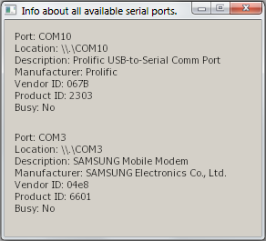

The Enumerator example shows how to use the class QSerialPortInfo for getting information about serial devices that are present in the system.

This GUI example displays information about serial ports in a widget, provided by the class QSerialPortInfo.
For getting information about the available ports, use the static method availablePorts().